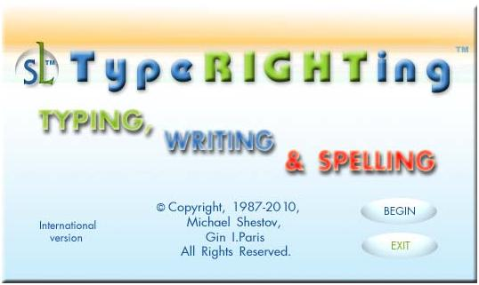
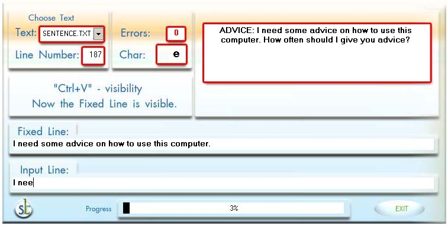
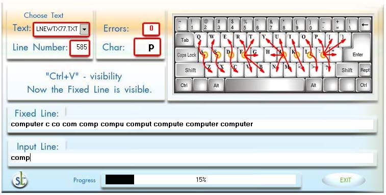
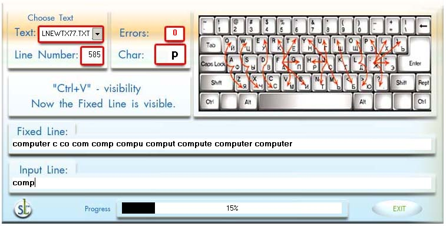
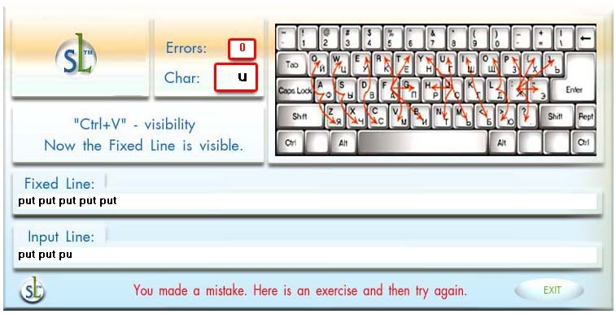

|
|
SCREEN SHOTS OF THE SUPREMELEARNING TYPING, WRITING & SPELLING PC PROGRAM (FOR WINDOWS)
[Read about Shestov's intellectual achievements.]



Mr. Shestov has invented a special kind of ergonomically correct finger movements in order to easily learn, and teach anyone, to type in many languages, by simply switching the language settings. Movements are always the same -- smooth and oval -- as opposed to the straight nervous strokes, which are taught by TypeWRONGing methods.  Here we have an example of a sub-version of the program that teaches you simultaneously how to use TypeRIGHTing in English and Russian. For more information, please see the "Transcript Excerpts" page at http://www.supremelearning.com/transcriptexcerpts.html |


|
Home page | Course information | Order SL courses via WVP Store | Principal author | Book excerpts | Transcript excerpts | Seminar excerpts | Contact us | Limited time SL specials | |
| This page
was last updated September 15th, 2012 © Copyright 1987-2013 by Wayward Ventures Publishing & Michael Shestov |